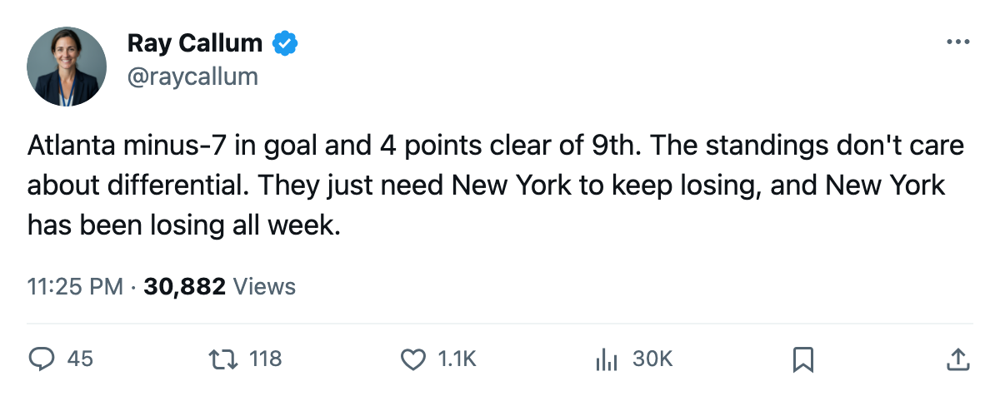

ATL 4, FLA 1 -- Atlanta holds 8th by 4, and 9th-place New York keeps sliding
A minus-7 team on a 4-game winning streak takes 2 points from each of its last 2 opponents. Minnesota visits tonight, first meeting of the season.
 Ray CallumSenior correspondent · Home Ice Network
Ray CallumSenior correspondent · Home Ice Network
The piece
Atlanta beat Florida 4-1 at home on March 7 and Washington 3-1 on the road on March 6. The  Atlanta Thrashers are 4 and 0 on a streak that has put them 4 points clear of 9th-place
Atlanta Thrashers are 4 and 0 on a streak that has put them 4 points clear of 9th-place  New York Islanders in the East, with 16 games remaining and 10 days before what the calendar has as the trade deadline.
New York Islanders in the East, with 16 games remaining and 10 days before what the calendar has as the trade deadline.
Atlanta has scored 228 and allowed 235 across 66 games, a differential of minus-7. Their 26-28-4 record is built on close finishes: the last 10 games carry 6 wins, 2 losses, and 2 overtime losses for 14 points, and 4 of those 6 wins came by a single goal.
 Byron Dafoe82 has started 56 of 66, an 85% share of the workload. Atlanta has leaned on him all season. He was in net for both wins this week.
Byron Dafoe82 has started 56 of 66, an 85% share of the workload. Atlanta has leaned on him all season. He was in net for both wins this week.
The injuries that make the streak harder to believe
Atlanta Thrashers carry 4 men on the injured list:  Sami Kapanen80 (hip, returns March 11),
Sami Kapanen80 (hip, returns March 11),  Patrik Stefan79 (foot, March 14), Derek MacKenzie70 (neck, March 11), and
Patrik Stefan79 (foot, March 14), Derek MacKenzie70 (neck, March 11), and  Andy Sutton76 (leg, April 12). Kapanen and MacKenzie could be back within 48 hours. Sutton is gone for the rest of the regular season.
Andy Sutton76 (leg, April 12). Kapanen and MacKenzie could be back within 48 hours. Sutton is gone for the rest of the regular season.
The Thrashers have managed without all four through the winning streak. Their 18-14 home record carries 11 of their 26 wins, and tonight Minnesota visits. The  Minnesota Wild are 17-35-7, 57 points, and 14th in the West. They arrive on a 1-7-2 start in their last 10 but just beat Carolina 3-2 on March 7.
Minnesota Wild are 17-35-7, 57 points, and 14th in the West. They arrive on a 1-7-2 start in their last 10 but just beat Carolina 3-2 on March 7.
This is the first meeting between the two clubs this season.
| Club | GP | W | L | OTL | Pts | Games left | Diff |
|---|---|---|---|---|---|---|---|
| Atlanta Thrashers | 66 | 26 | 28 | 4 | 72 | 16 | -7 |
| New York Islanders | 67 | 26 | 31 | 4 | 68 | 15 | -18 |
 Pittsburgh Penguins Pittsburgh Penguins | 68 | 19 | 30 | 9 | 67 | 14 | -26 |
New York has 15 games left and sits 4 points back. Pittsburgh, 10th, carries the same point total as New York on one fewer game played. The bottom of the Eastern playoff picture is 4 points wide with three clubs inside that range.
Atlanta just needs to stay in front of a New York club that has lost 2 straight, including a 2-1 setback to Boston on March 6. If the Islanders' slide continues at its current pace, the 4-point gap becomes a 6-point gap within a week.
The Thrashers host Minnesota tonight, then travel to New Jersey on March 11 before meeting Minnesota Wild a second time on March 13 at home. A win in either of the Minnesota meetings would extend the streak and widen the margin.
